05 / Food Time / Immersive experience concept / 2025
A seat at the table.
A journey through time.
Food Time is an installation concept for experiencing the food and dining culture of ancient Hemudu. Visitors sit among ceramic vessels and animal-shaped objects, then pick up different objects to explore fishing, animal keeping and rice cultivation. Each choice changes both the scene in front of them and the animation on the tabletop.
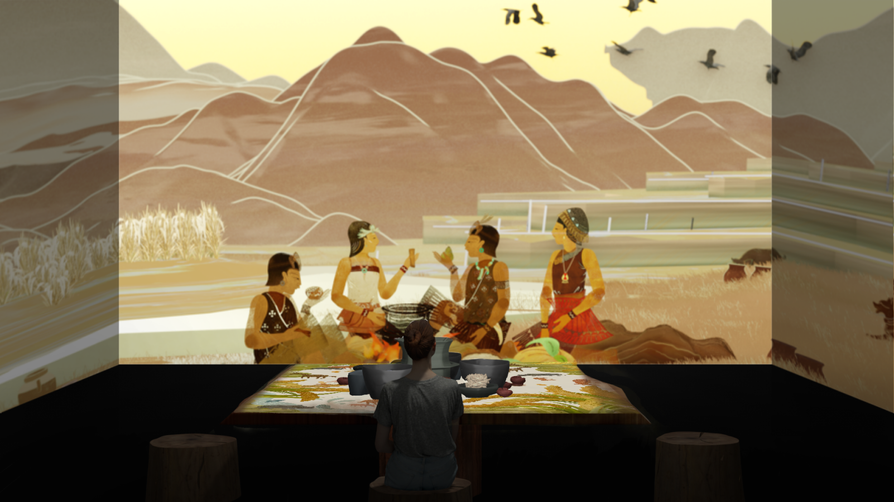
01 / Background & narrative
Food as a way
to encounter time.
“Food is more than nourishment—it is a way of chewing over time.” This idea anchors Food Time’s imagined spring feast. The project draws on Hemudu culture in Zhejiang and brings food, vessels and seasonal rituals into one immersive setting.
The visitor joins the feast as a participant, sharing a table with stylized figures from the team’s narrative world. Fire, fields and water connect the stories of preparing food, cultivating rice and fishing. The spring banquet frames these activities as a collective welcome to a new agricultural season.
Animal keeping and cooking connect the meal to shared work and community life.
Harvesting, cooking vessels and grain connect sustenance with tools and making.
The river supplies food and becomes part of the feast’s narrative of gratitude.
The three strands return to people gathering at the table.
The spring feast is the team’s designed narrative interpretation, rather than a claim to reconstruct a documented historical event.
02 / Character design
Character Design:
Ancient Hemudu People
The original character lineup brings a shared visual language to the feast: side-profile silhouettes, layered clothing, ornaments and warm textured surfaces. The figures appear across the surrounding scenes so the narrative world remains recognizable as the activity changes.
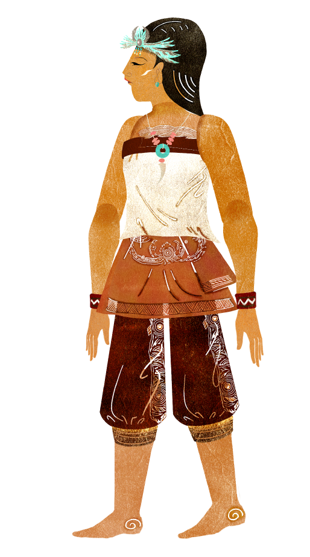
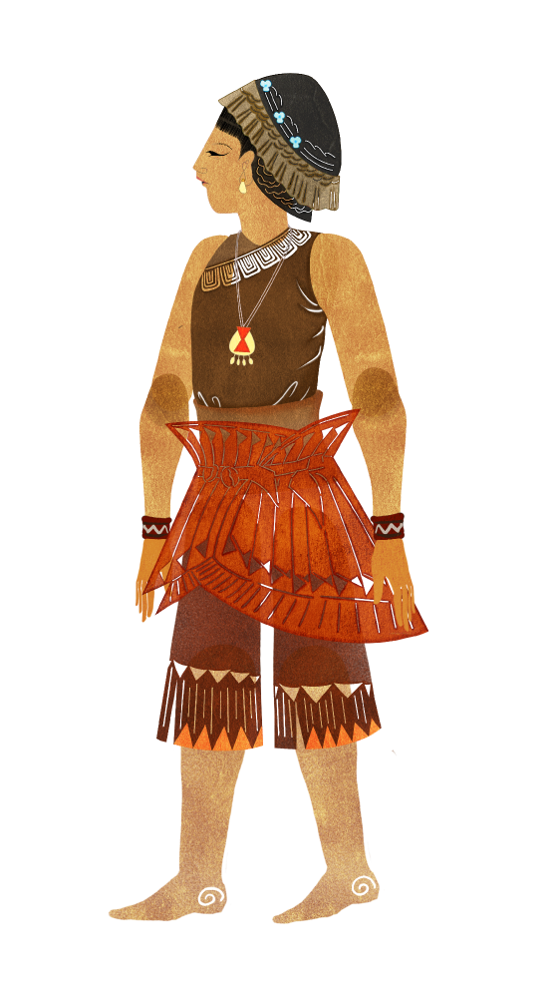
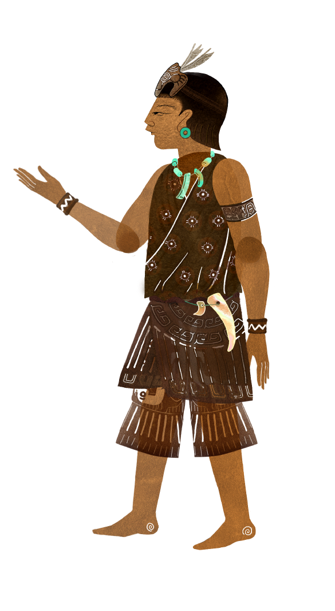
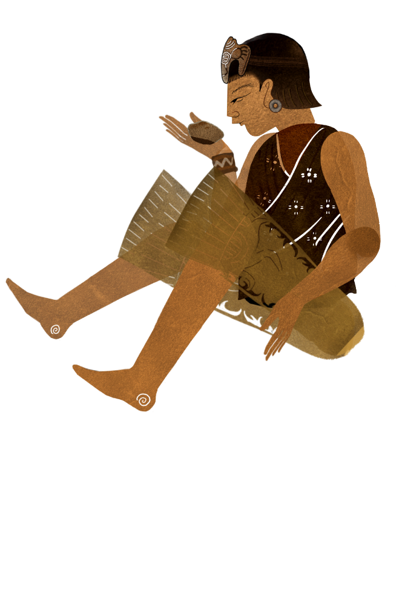
Hemudu character designs.
03 / Spatial & scene design
Experience Setup
Three surrounding screens place the visitor inside the story while a projected tabletop provides the close-up interaction surface. The proposed installation combines a wood table and stump seats with a woven floor mat, ceramic models and food props.
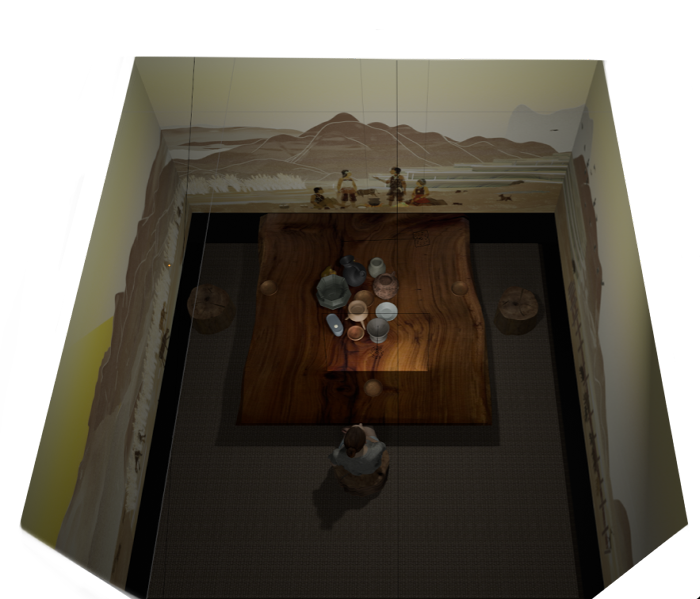
Materials: three screens with aluminium frames, a natural-wood table and stump seats, a woven floor mat, ceramic models and food props.
The scenic composition connects a warm mountain landscape, rice fields, water and animal enclosures. These settings support the three food stories, with the shared feast serving as the standby scene.
04 / Tabletop ceramic references
Vessels Used by
Ancient Hemudu People
The table’s ceramic models draw on six original references. Their shapes and engraved motifs connect the tabletop objects to the narrative’s food and cultural themes.
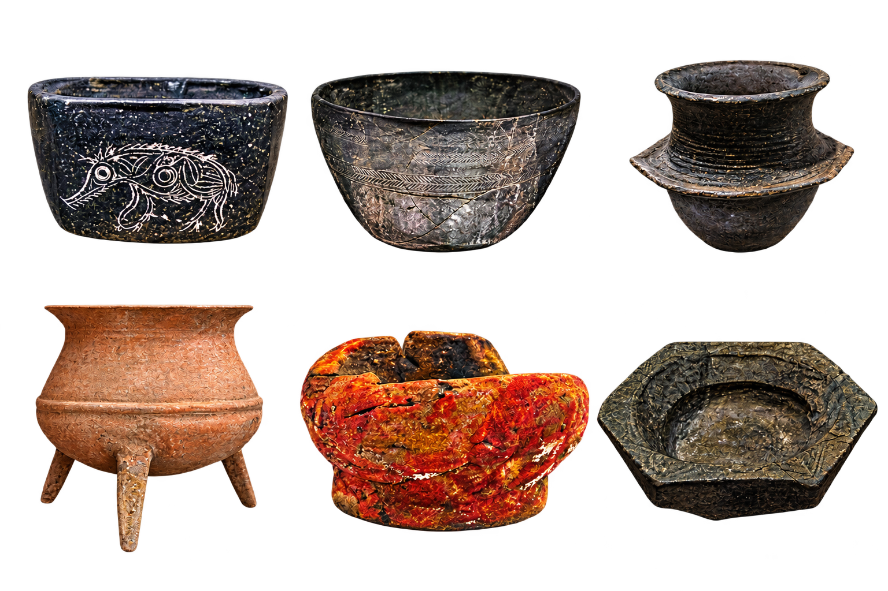
Pig-pattern black pottery bowl
Rim Ø21.7 cm · Height 11.7 cm · Base Ø17 cm
Rice-pattern pottery bowl
Rim Ø30 cm · Height 20 cm
Black waist-rim cooking vessel
Rim Ø30 cm · Height 30 cm · Body Ø40 cm · Rim band 3 cm
Tripod pottery vessel
Rim Ø20 cm · Leg height 5.7 cm · Total height 20 cm
Red lacquer bowl
Rim 10.6 × 9.2 cm · Height 5.7 cm · Base 7.6 × 7.2 cm
Pottery basin
Rim Ø28 cm · Height 6 cm · Base Ø15 cm
Names and dimensions follow the project’s original reference sheet.
Concept film
Dining with the
Ancient Hemudu People
The film presents the proposed cultural experience. A visitor takes a seat at the Hemudu dining table and picks up different objects: fish connects to fishing, pork to animal keeping, and rice to cultivation. Visitors choose one object at a time and can try the others at different moments, in any order. Each choice activates two coordinated responses—a living scene on the surrounding screens and a matching animation on the table. The vessels and animal motifs connect these actions to Hemudu food, drinking and everyday life.
Concept visualization · I created visual content through LoRA training, scene modeling and rendering, character illustration and animation. The film presents the proposed object-triggered experience.
05 / Interaction design
Choose an object.
Explore its story.
Take a seat and choose one of three food objects: fish, pork or rice. Pick up one object at a time to activate its corresponding scene and tabletop animation. Visitors can pick up the other objects at different moments to explore all three stories, in any order and at their own pace.
The surrounding screens show the shared feast, while the tabletop displays its initial illustrated composition.
02 / Choose one object at a time · Explore the three options in any order
Surrounding screens: fishing scene.
Tabletop: small fish swim.
Surrounding screens: pig-keeping scene.
Tabletop: small pigs run.
Surrounding screens: rice-harvesting scene.
Tabletop: rice sways.
Both the surrounding screens and tabletop return to the standby composition.
This describes the designed interaction logic. Pressure-sensor triggering and interactive projection were not implemented.
06 / Visual origins / Hemudu engraved art
From engraved motifs
to a living tabletop.
The tabletop design takes its visual elements from the Hemudu references shown in the original project. Pig, rice and fish patterns connect the illustration to food and cultivation; rhinoceros and deer patterns extend the world of animals around the table. The team reinterprets these engraved forms as colored illustrations, then animates selected elements in response to the visitor’s object choice.
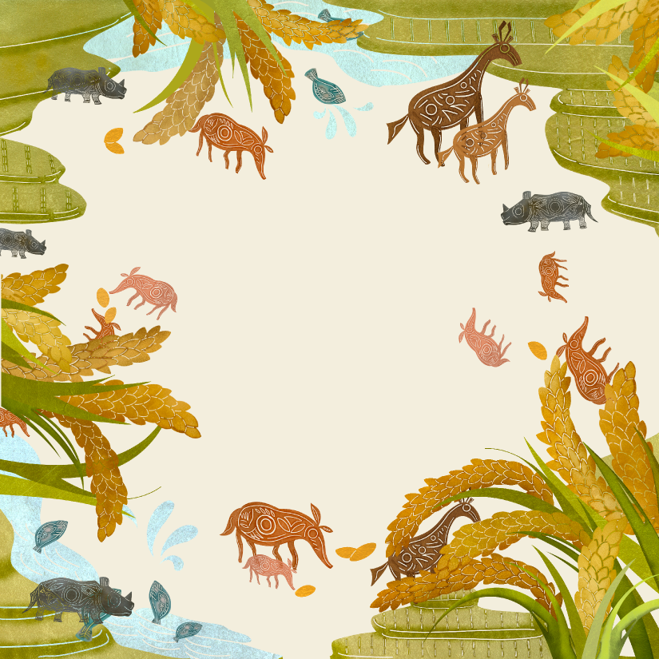
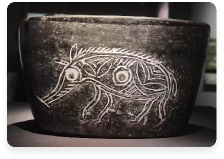
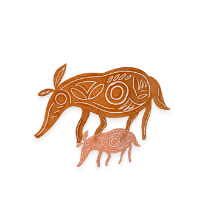
Pig motif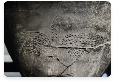
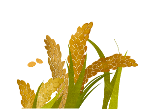
Rice-ear motif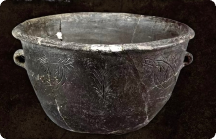
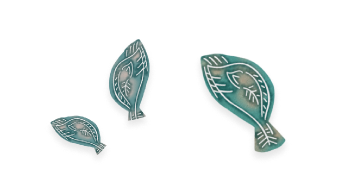
Fish motif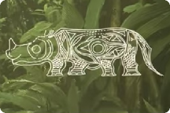
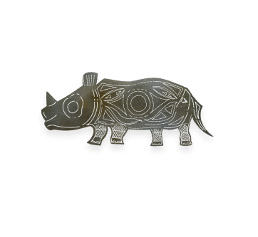
Rhinoceros motif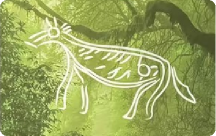
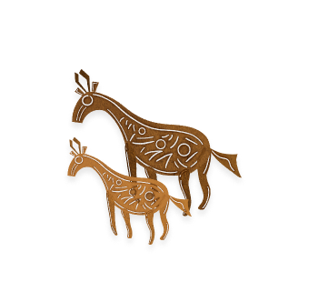
Deer motif07 / Tabletop interaction design
The story responds
at the scale of your hands.
The tabletop illustration translates the project’s Hemudu engraved-art references into five recurring motifs: pigs, rice, fish, rhinoceroses and deer. These forms connect the projected surface to the vessels and animal objects within the experience. The physical ceramic vessels and animal-shaped objects evoke the dining and drinking culture represented in the installation.
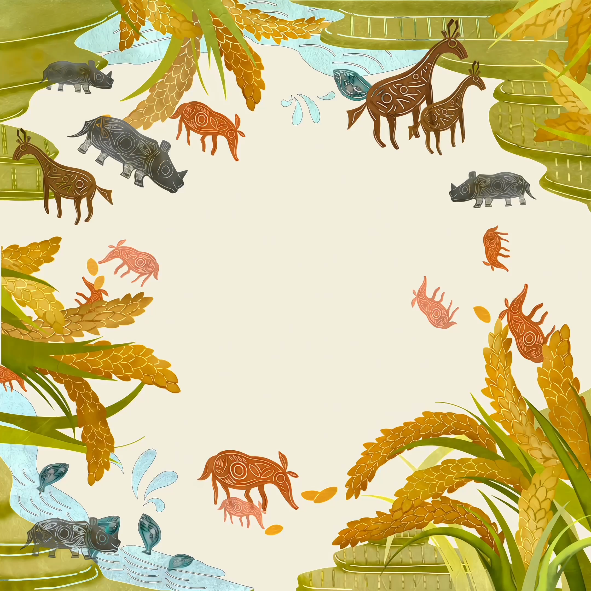
An illustrated feast frames the table before an action.
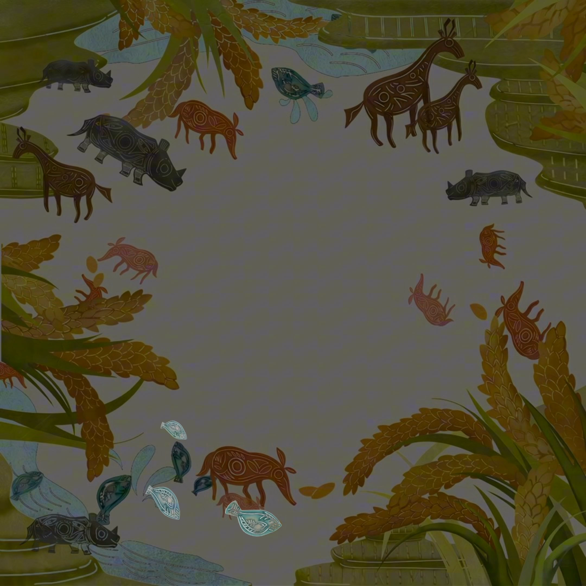
Pick up fish → fishing scene + swimming fish.
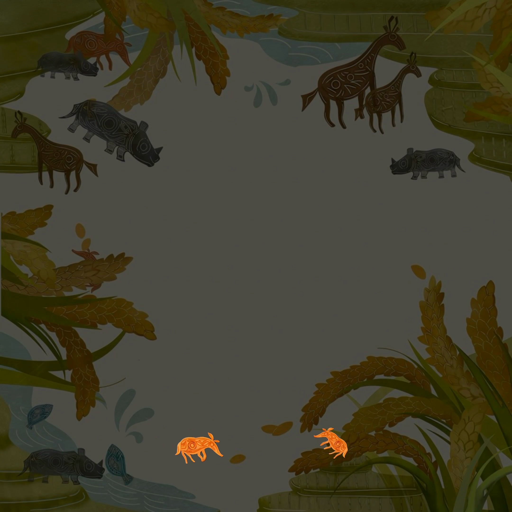
Pick up pork → pig-keeping scene + running pigs.
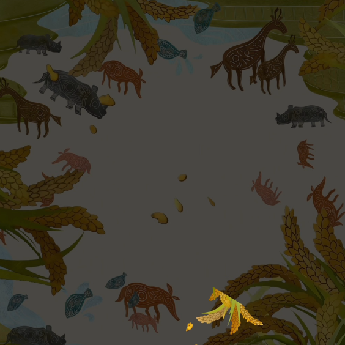
Pick up rice → harvesting scene + swaying grain.
08 / Surrounding scene design
Fire. Rice. Water.
The team’s spring-feast narrative brings food preparation, cultivation and ritual into a shared visual world. Explore the original scenes below.
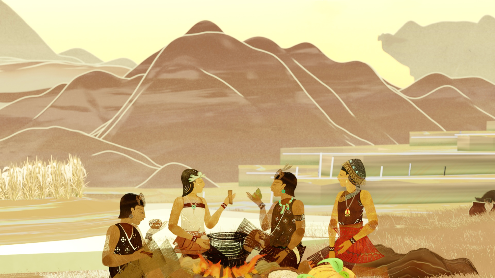
The dining scene establishes the setting before an object is picked up.
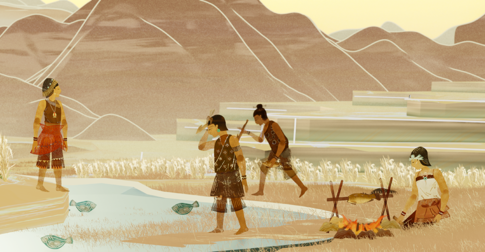
Picking up the fish object activates the fishing story and swimming fish on the table.
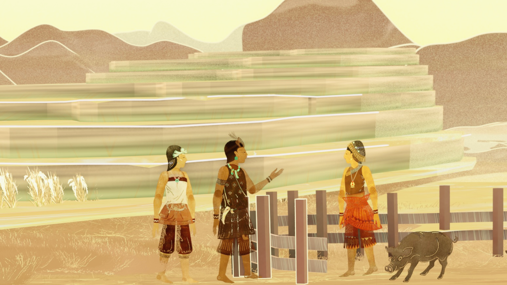
Picking up the pork object activates the pig-keeping story and running pigs on the table.
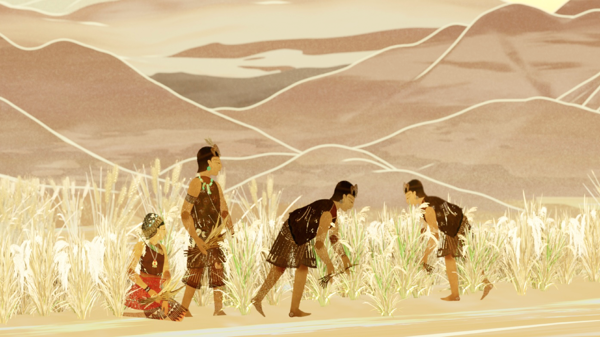
Picking up the rice object activates the harvesting story and swaying rice on the table.
Scene illustrations for the immersive experience.
09 / My contribution / Visual production
AI as part of
the visual-making process.
I trained the LoRA model, modeled and rendered scenes, illustrated characters, and created animations for Food Time. The team’s visual direction combines stylized figures, warm landscapes and motifs drawn from Hemudu culture.
Characters, scenes and cultural motifs establish the team’s intended narrative world.
I trained a LoRA model as part of the AI-assisted visual workflow.
I modeled and rendered the scenes, illustrated characters, and created animation content for the concept film.
Outcome & next evaluation
A visual concept.
An interaction to test next.
My LoRA training, scene modeling and rendering, character illustrations and animations contribute to the project visuals and concept film.
Pressure-triggered playback and interactive projection remain proposed features.
A next prototype could test whether visitors recognize the starting seat, understand the food-to-story relationship and notice the feedback after picking up an object. Trigger reliability, response timing and reset behavior would then need to be evaluated in the physical space.
Scene panorama gallery
The complete Hemudu landscape
The wide composition connects rice fields, communal cooking and pig keeping across the installation. Each food object selects a scene within this shared world.
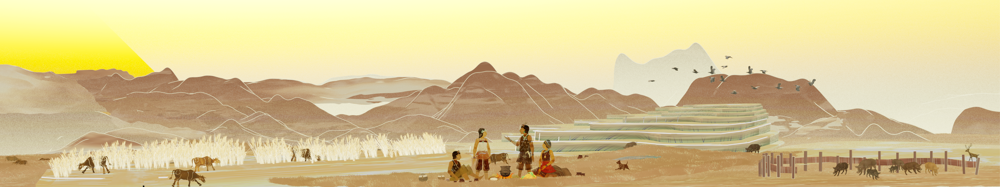
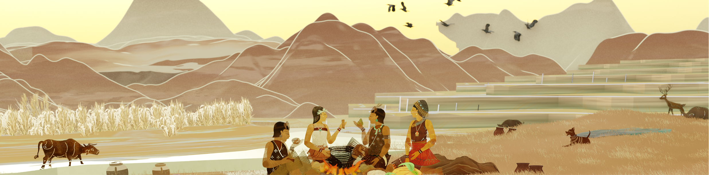
The initial scene welcomes the visitor to the table.
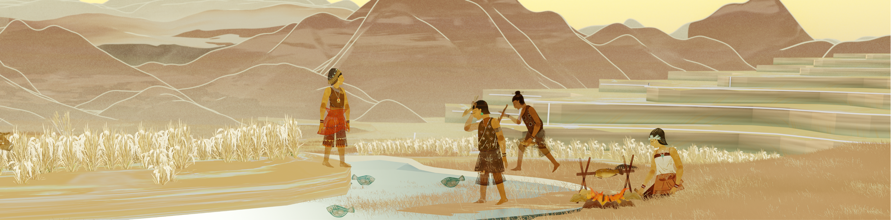
Pick up fish → fishing scene + swimming fish on the tabletop.
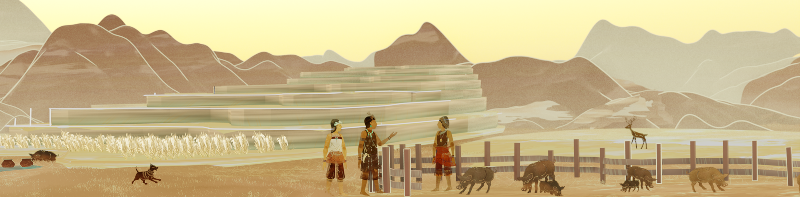
Pick up pork → pig-keeping scene + running pigs on the tabletop.
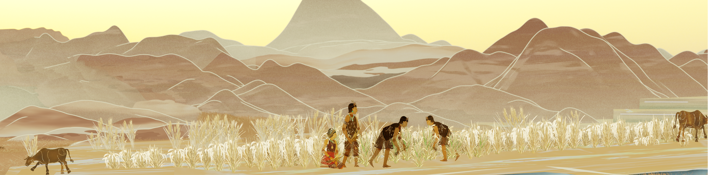
Pick up rice → harvesting scene + swaying rice on the tabletop.
Leaving the seat returns both surfaces to the shared-feast standby state.